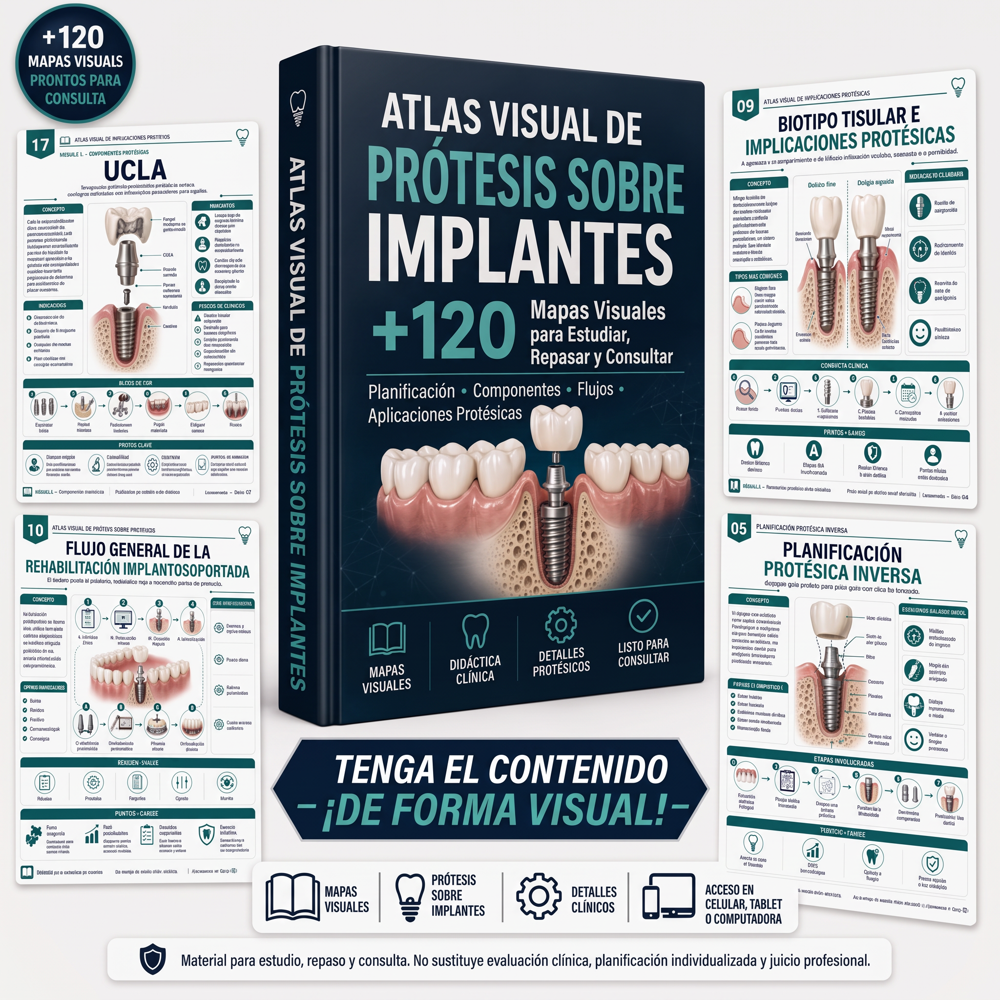
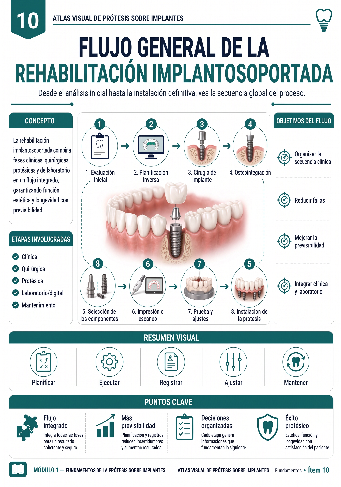
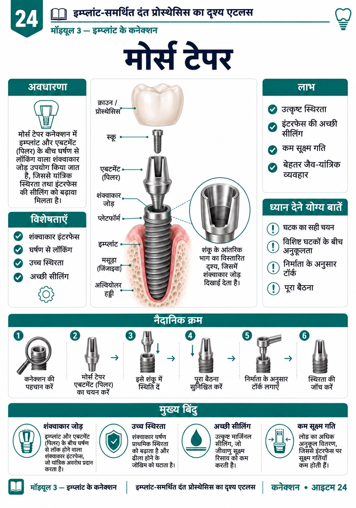
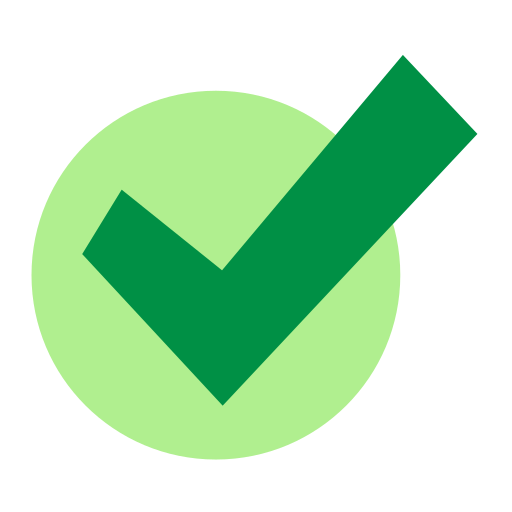
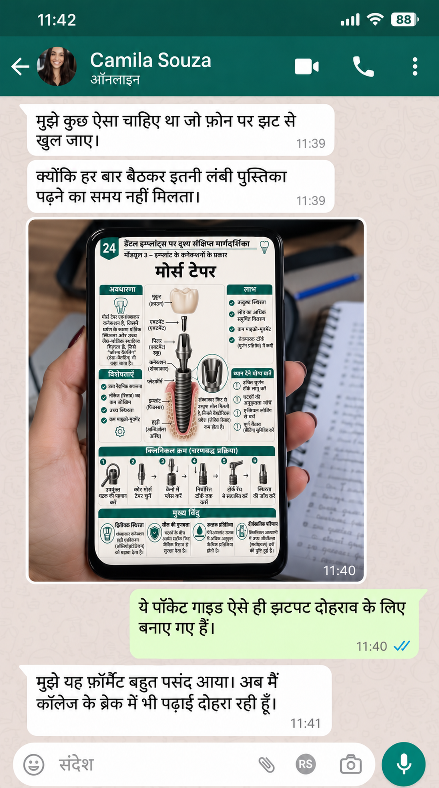
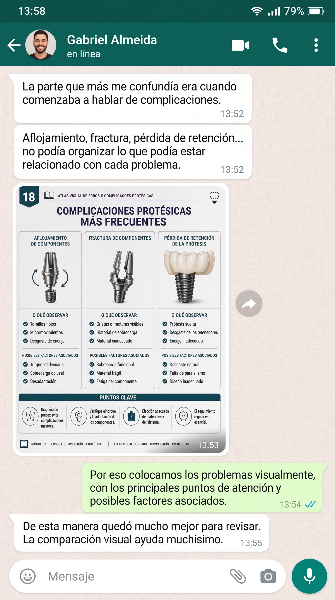
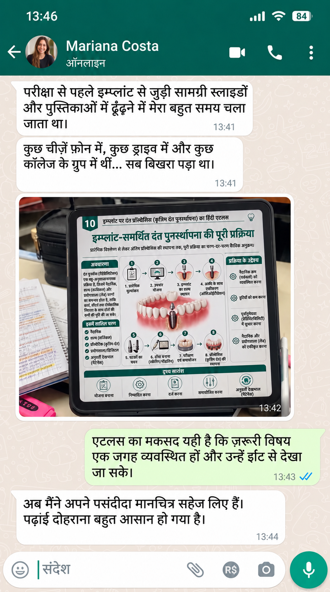
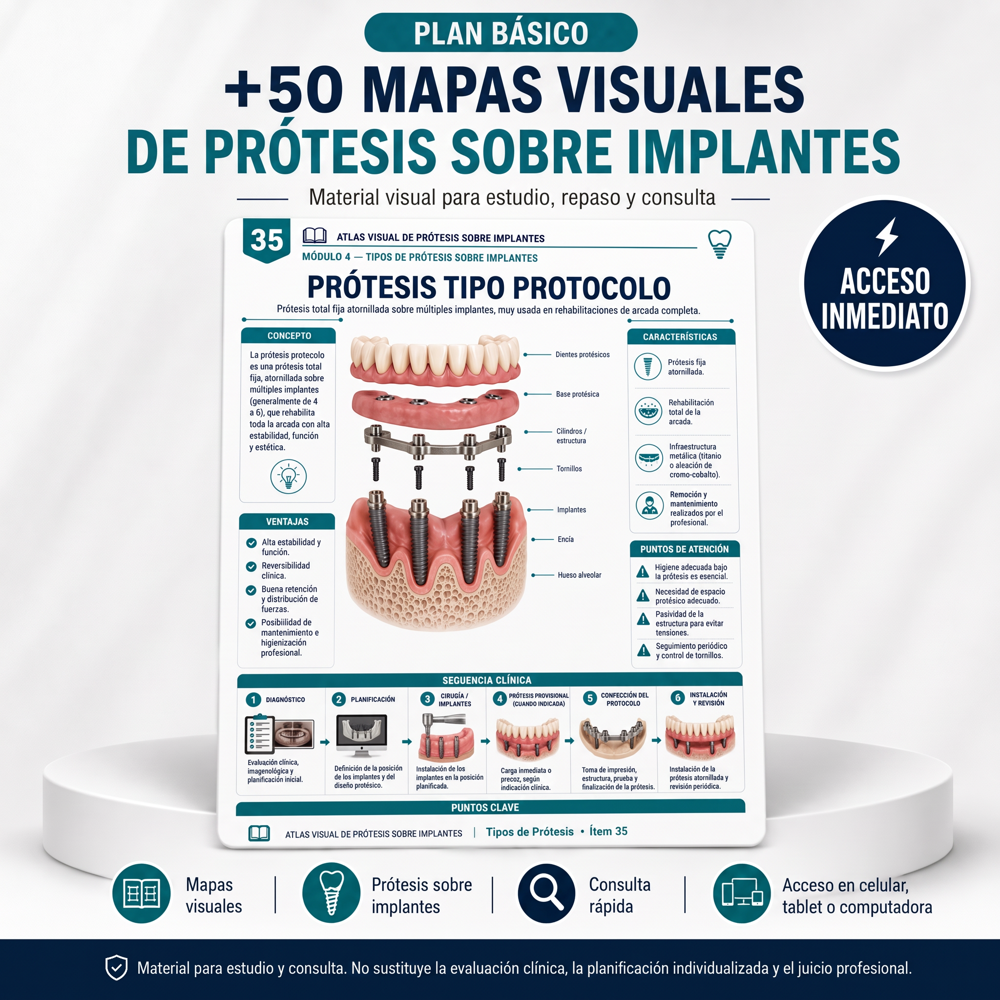
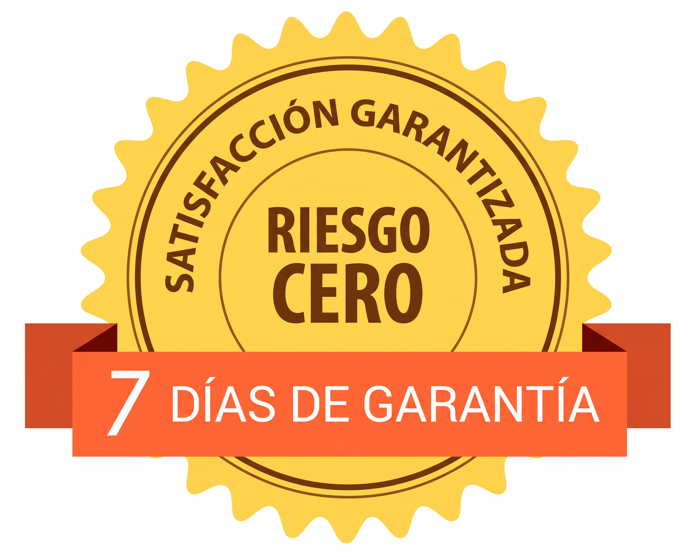

OFERTA ESPECIAL DISPONIBLE SOLO HOY
+120 ATLAS Visuales de Prótesis sobre Implantes
CON COMPONENTES, CONEXIONES, CLASIFICACIONES Y ETAPAS CLÍNICAS ORGANIZADAS PARA QUE PUEDAS ESTUDIAR, REPASAR Y CONSULTAR

Ten en el celular +120 ATLAS visuales para comprender y consultar los principales contenidos de Prótesis sobre Implantes, incluyendo componentes protésicos, conexiones, tipos de prótesis, toma de impresiones, planificación, etapas clínicas, oclusión y complicaciones.
Recibes todo inmediatamente en tu WhatsAppy en tu correo electrónico
WhatsAppy en tu correo electrónico
MIRA POR DENTRO EL MATERIAL QUE VAS A RECIBIR
Vista previa de la biblioteca con +120 ATLAS Visuales de Prótesis sobre Implantes, organizados para que puedas visualizar rápidamente componentes, conexiones, clasificaciones, comparaciones, secuencias clínicas y los principales conceptos del área.






Basta de perder tiempo buscando la misma información en diapositivas, apuntes y PDFs diferentes.
Con el Atlas Visual de Prótesis sobre Implantes, encuentras rápidamente el tema que necesitas repasar y ya puedes consultar:

Componentes protésicos- Conexiones de los implantes
- Tipos de prótesis
- Clasificaciones importantes
- Toma de impresiones sobre implantes
- Secuencias clínicas
- Planificación protésica
- Errores y complicaciones
- Comparaciones visuales
- Resúmenes para consulta rápida
Solo tienes que abrirlo, encontrar el tema que necesitas y usar el ATLAS como referencia para estudiar, repasar o consultar de nuevo.
IDEAL PARA QUIEN ESTUDIA O ESTÁ COMENZANDO A PROFUNDIZAR EN PRÓTESIS SOBRE IMPLANTES
Si eres estudiante de Odontología, recién graduado o estás comenzando tus estudios en el área de Implantología y Prótesis, utiliza este material para:
- Repasar componentes protésicos antes de exámenes y clases.
- Diferenciar los principales tipos de conexiones.
- Visualizar pilares, transfers, cicatrizadores y otros componentes.
- Comparar prótesis cementadas y atornilladas.
- Comprender mejor las etapas de la toma de impresiones.
- Repasar secuencias clínicas y de laboratorio.
- Organizar contenidos que normalmente quedan dispersos.
- Consultar clasificaciones sin tener que buscar nuevamente en textos extensos.
- Repasar errores y complicaciones protésicas.
- Consultar rápidamente desde el celular durante tus estudios.
Si te identificaste con al menos dos de estas situaciones, o Atlas Visual de Prótesis sobre Implantes fue organizado para facilitar tu rutina de estudio y repaso.
¿CUÁNTAS VECES TE HAS CONFUNDIDO CON COMPONENTES, CONEXIONES O ETAPAS Y HAS TENIDO QUE VOLVER A BUSCAR TODO OTRA VEZ?
⏰ Aprovecha la oferta por tiempo limitado
MIRA LO QUE ESTÁN DICIENDO SOBRE EL MATERIAL




⚡ Acceso inmediato
MIRA TODO LO QUE VAS A RECIBIR
- +120 ATLAS Visuales de Prótesis sobre Implantes
- Contenido organizado por temas
- Fundamentos de la prótesis sobre implantes
- Planificación inversa
- Perfil de emergencia
- Espacio protésico
- Componentes protésicos
- Cicatrizadores
- Transfers
- Análogos
- Pilares protésicos
- UCLA
- Ti-base
- Tornillos protésicos
- Hexágono externo
- Hexágono interno
- Cone Morse
- Comparación entre conexiones
- Prótesis unitarias
- Prótesis múltiples
- Prótesis tipo protocolo
- Overdentures
- Prótesis cementadas
- Prótesis atornilladas
- Impresión con cubeta abierta
- Impresión con cubeta cerrada
- Técnicas de transferencia
- Planificación protésica
- Etapas clínicas
- Etapas de laboratorio
- Oclusión aplicada a la implantología
- Distribución de fuerzas
- Afrouxamento de parafusos
- Fraturas
- Fallas de retención
- Problemas de adaptación
- Complicaciones protésicas
- Comparaciones lado a lado
- ATLAS paso a paso
- ATLAS para consulta rápida
- Biblioteca organizada por temas
- Acceso desde celular, tableta o computadora
- Archivos preparados para consulta digital y impresión
- Acceso inmediato
- Acceso vitalicio
Y NO TERMINA AHÍ…
USTED ADEMÁS RECIBE
🎁 3 BONOS EXCLUSIVOS

ATLAS VISUAL DE ERRORES Y COMPLICACIONES PROTÉSICAS
Una selección de ATLAS dedicada a las principales fallas, posibles causas y puntos de atención relacionados con la Prótesis sobre Implantes.
Valor: $24GRATIS

GUÍA VISUAL DE COMPONENTES PROTÉSICOS
Una biblioteca complementaria para ayudarle a identificar visualmente los principales componentes utilizados en Prótesis sobre Implantes.
Valor: $21GRATIS

50 ATLAS DE BOLSO
Versiones resumidas y adaptadas para móvil con los contenidos principales de la biblioteca.
Valor: $15GRATIS
⏰ ÚLTIMA OPORTUNIDAD — LA OFERTA TERMINA HOY
Elija la opción ideal para usted
PLAN BÁSICO
50 ATLAS Esenciales de Prótesis sobre Implantes

- 50 ATLAS Esenciales de Prótesis sobre Implantes
- Fundamentos de la prótesis sobre implantes
- Principales componentes protésicos
- Material digital
- Acceso vitalicio
- Garantía de 7 días
- ✕ No incluye los 3 bonos
- ✕ No incluye la biblioteca completa
De $27,90
$4,90
O en hasta 3x con tarjeta
Usted ahorra $23,00
QUIERO EL PLAN BÁSICOEl 92% de las personas aprovecha la oferta a continuación:

PLAN COMPLETO
+120 ATLAS Visuales de Prótesis sobre Implantes con componentes, conexiones, clasificaciones, comparaciones y etapas organizadas para estudio y consulta
- Todo lo del Plan Básico
- +120 ATLAS Visuales de Prótesis sobre Implantes
- Componentes protésicos
- Conexiones protésicas
- Hexágono externo
- Hexágono interno
- Cone Morse
- Prótesis unitarias
- Prótesis múltiples
- Prótesis protocolo
- Overdentures
- Cementadas vs. atornilladas
- Impresión con cubeta abierta vs. cerrada
- Técnicas de transferencia
- Planificación inversa
- Perfil de emergencia
- Etapas clínicas
- Etapas de laboratorio
- Oclusión
- Distribución de fuerzas
- Errores y complicaciones
- Comparaciones visuales
- ATLAS paso a paso
- ATLAS de consulta rápida
- Biblioteca organizada por temass
- Versión adaptada para celular
- Archivos preparados para impresión
- Acceso inmediato
- Acceso vitalicio
- 🎁 BONO 01 — Atlas Visual de Errores y Complicaciones Protésicas
- 🎁 BONO 02 — Guía Visual de Componentes Protésicos
- 🎁 BONO 03 — 50 ATLAS de Bolsillo
DE $27,90
Hoy por solo:
$11,90
O en hasta 6 cuotas con tarjeta
Ahorras $16,00
QUIERO EL PLAN COMPLETO
🛡 GARANTÍA DE 7 DÍAS
Tienes 7 días de garantía. Tras la compra, podrás acceder y conocer el material. Si consideras que el contenido no corresponde a lo presentado en esta página, podrás solicitar el reembolso dentro del plazo informado por la plataforma de pago.
COMPRA AHORA Y RECIBE TU ACCESO INMEDIATAMENTE
1. Realiza tu compra
Elige el plan deseado y finaliza tu pago.
2. Recibe el material
Tras la confirmación del pago, recibirás las instrucciones de acceso en el WhatsApp y en el correo electrónico proporcionados durante la compra.
3. Encuentra el tema
Abre el Atlas Visual y elige el contenido de Prótesis sobre Implantes que deseas estudiar o repasar.
4. Consulta y repasa
Visualiza componentes, comparaciones, clasificaciones y secuencias de manera organizada siempre que necesites repasar el tema.
PREGUNTAS FRECUENTES
¿Necesito ya tener conocimientos de Implantología?
No. El material fue organizado para facilitar la consulta tanto de quienes están teniendo los primeros contactos con el tema como de quienes ya estudiaron los contenidos y desean repasar.
¿Sirve para estudiantes de Odontología?
Sí. El Atlas fue desarrollado principalmente como material educativo complementario para estudiantes de Odontología.
¿Sirve para recién graduados?
Sí. Los recién graduados que desean repasar contenidos de Prótesis sobre Implantes también pueden utilizar el material como una biblioteca de consulta educativa.
¿El contenido es un curso?
No. El Atlas Visual no es un curso ni un entrenamiento. Es una biblioteca digital de ATLAS visuales lista para estudio, repaso y consulta.
¿El material muestra componentes protésicos?
Sí. La biblioteca contiene contenidos dedicados a los principales componentes relacionados con la Prótesis sobre Implantes.
¿Muestra las principales conexiones?
Sí. Encontrará contenidos sobre diferentes conexiones y comparaciones visuales entre ellas.
¿Hay contenido sobre prótesis cementadas y atornilladas?
Sí. La biblioteca incluye ATLAS comparativos para facilitar la comprensión de las diferencias entre esos enfoques.
¿Hay contenido sobre moldaje?
Sí. Existen ATLAS dedicados a las principales técnicas y secuencias relacionadas con el moldaje sobre implantes.
¿Hay complicaciones protésicas?
Sí. El Plan Completo incluye contenidos específicos sobre errores, fallos y complicaciones, además de un bono dedicado al tema.
¿Puedo acceder desde el celular?
Sí. El material puede consultarse desde el celular, la tablet o la computadora.
¿Puedo imprimir?
Sí. Podrá imprimir las páginas que desee para uso personal.
¿Cómo recibo mi acceso?
Tras la confirmación del pago, las instrucciones serán enviadas a los datos proporcionados durante la compra.
¿El acceso es vitalicio?
Sí, para los archivos incluidos en la versión adquirida, conforme a las condiciones informadas en el momento de la compra.
¿Existe mensualidad?
No. El pago es único.
¿El material sustituye clases, libros u orientación profesional?
No. El Atlas Visual tiene finalidad exclusivamente educativa y complementaria y no sustituye clases, literatura científica, protocolos clínicos oficiales, orientación docente, diagnóstico, planificación o atención profesional.
¿Existe garantía?
Sí. Usted dispone de 7 días para conocer el material y solicitar el reembolso dentro de las condiciones informadas por la plataforma de pago.
COMECE AGORA
Tenga en su celular una biblioteca con más de 120 ATLAS Visuales de Prótesis sobre Implantes, con componentes, conexiones, clasificaciones, comparaciones y etapas organizadas para que usted estudie, revise y consulte rápidamente siempre que lo necesite.
Mariana S.
Goiânia, GO
Acaba de garantizar el acceso a Atlas Visual de Prótesis sobre Implantes. Compra completada ahora.
hace 1 min